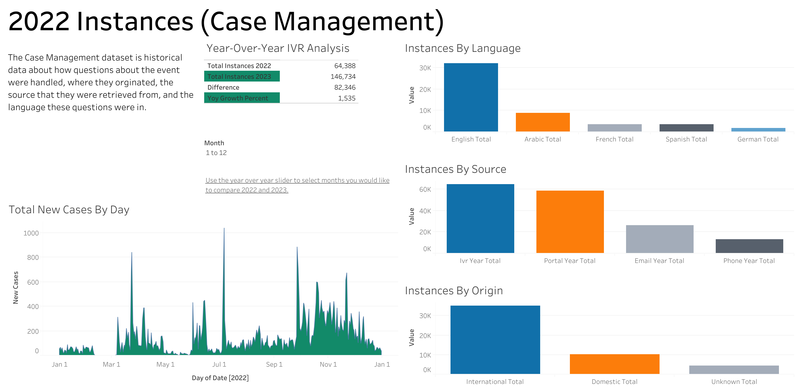
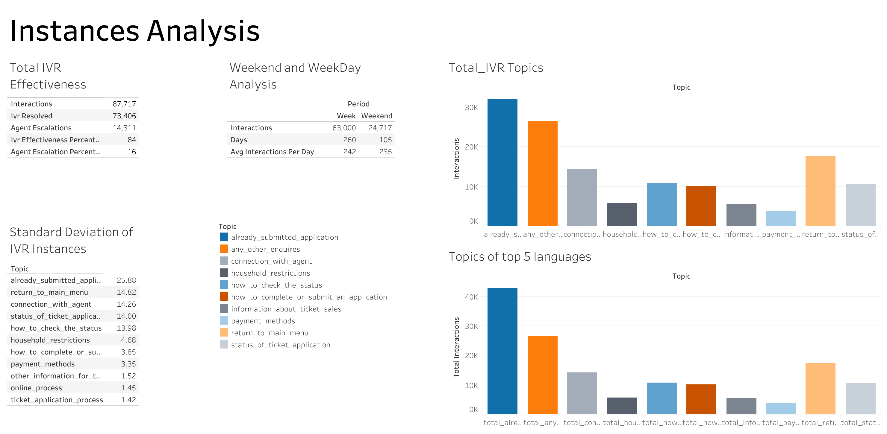
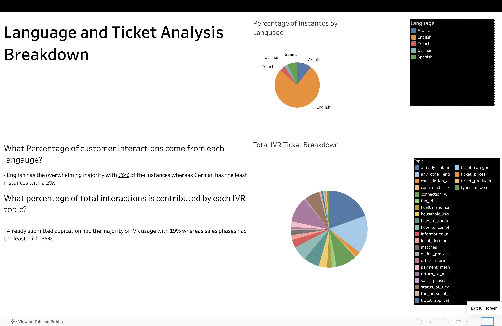
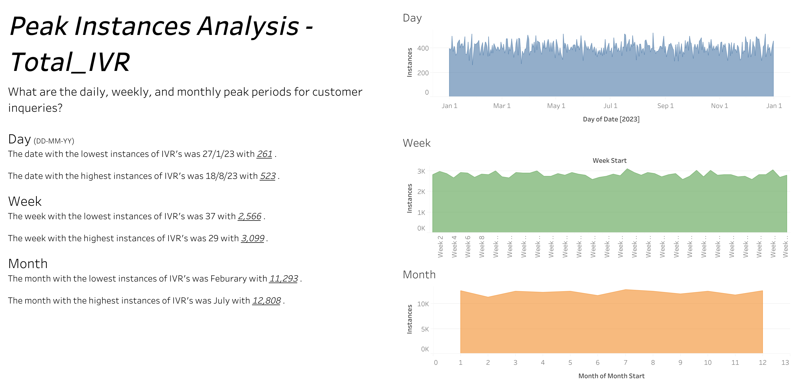

This case study, conducted as part of an application for a Data Engineer position at FIFA, was based on sample data and focused on analyzing year-to-date (YTD) metrics from FIFA’s Interactive Voice Response (IVR) system. The objective was to identify areas for optimization by cleaning, analyzing, and visualizing the data. Given the strict four-day timeframe, this project tested my ability to manage time effectively, solve problems under pressure, and apply technical skills in a professional context.
As my first professional case study for an interview, this was both a challenging and rewarding experience. It allowed me to showcase my technical expertise in data preprocessing, SQL analysis, and KPI reporting while gaining insights into opportunities for personal growth. The sample data provided a realistic scenario, enabling me to analyze FIFA’s IVR system and suggest actionable improvements grounded in the data.
Github Repository
2022 Instances Analysis

In this Dashboard Year-Over-Year calculations on total IVR instances were completed. There was a 78 % increase in uses in 2023 compared to 2024. English had the most amount of uses with German having the least. While there are multiple options available IVR calls had the higest instances. There was a considerable spike in uses on July 1st.
2023 Instances Analysis

For 2023 the data was a bit more robust and detailed. Total IVR effectiveness in 2023 was 84% which means that the options available with the IVR is sufficent enough to answer a majority of questions asked by customers. As expected, weekday instances were much higher than weekend instances.
Langauge & Ticket Analysis Breakdown

Using Langauges as a method of analysis I was able to conclude that English had the lionshare of IVR instances at 76% whereas German had the least with 2% over 2023. Already submitted an application was the topic that users were most concerned with over the 5 languages sampled (Arabic, English, French, German and Spanish) with 19.44 %.
Peak Instances Analysis

Total IVR represents the combination of all 5 languages sampled and their day to day metrics. While most of the days were similar in the amount of instances the Fifa IVR was utilized there are some outliers. For example, the date with the highest instances of IVR's was 18/8/23 with 523. In the 2022 instances there was a day with a very strong outlier which was 06-07-22 with 1,039 instances. This is something I would need more data or information on to complete.